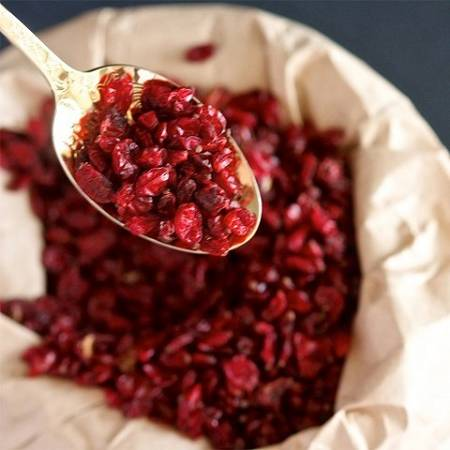

Untitled Document

زرشک برای درمان عفونت
2.زرشک برای کمک به درمان عفونت های مجاری ادراری:
یکی دیگر از مزایای سلامتی زرشک، درمان عفونت در مجاری ادراری است.
3.زرشک برای کمک به درمان عفونت های دستگاه گوارش:
یکی از مهم ترین فواید زرشک این است که به دلیل وجود برخی عوامل ضد باکتریایی و ضد قارچی , می تواند به درمان عفونت های دستگاه گوارش کمک کند .
4.زرشک مفید برای گلودرد:
زرشک به درمان گلو درد و برخی شرایط خفیف، مانند سرما خوردگی کمک می کند. این به دلیل حضور ویتامین c در زرشک است.